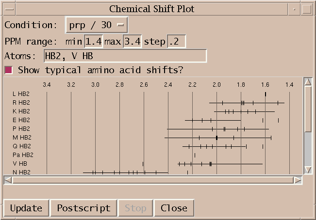
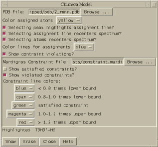
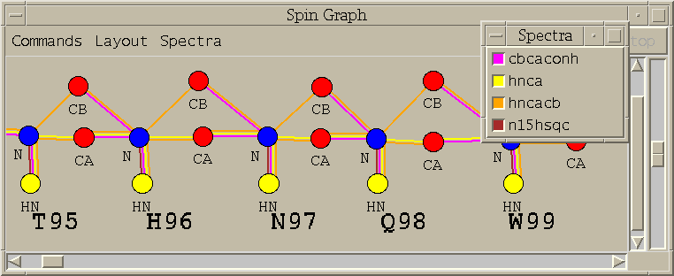
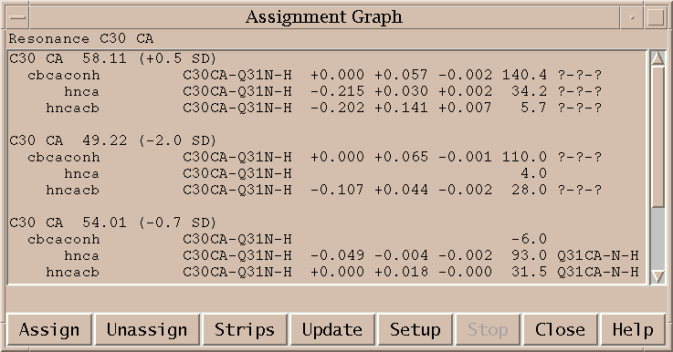
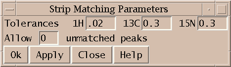

If Sparky doesn't do what you want you can write your own extension in Python. You can also make use of extensions that other people have written. If you want to do something similar to what an existing extension does you can customize it.
New developments in Sparky are often done in Python. Core features are implemented in C++. Python is simpler than C++ and is an interpretted language so an extension can be added or modified without building new Sparky executable. Some of the extensions below are inconveniently slow, their reliability is lower than the core C++ features, and they are more likely to be changed in future releases than are core features. In spite of these drawbacks many do tasks that cannot be readily done using only core features.
Errors that occur in a Python extension generally do not cause Sparky to crash. Instead the Python shell window pops up and displays a stack trace. The stack trace shows exactly what functions in which files of Python code were executing when the error occurred. The last line indicates the type of error. For instance, if you mistype a PDB file name to an extension it may fail with an I/O error indicating the file could not be found. Many of the Python extensions do not adequately check their input and catch such problems. In these cases looking at the last line of the stack trace may indicate what caused the problem.
| Extension | File | Description |
|---|---|---|
| Align spectrum (al) | align.py | Shift ppm scale to align peaks in two spectra |
| Assignment distances (ad) | distance.py | List assignments with far atoms, peaks with multiple close atom assignments, close atom pairs with no assignment, ... |
| Atom name translation (ax) | atomnames.py | Show translations used to convert non-standard atom names to standard names. |
| AutoAssign (aa) | autoassign.py | Run protein backbone automatic assignment program AutoAssign |
| Center view setup (cv) | centerview.py | Center spectrum view on mouse position or peak in another view. |
| Chemical shift plot (cs) | chemshift.py | Plot chemical shifts for atoms |
| Chimera molecule view (km) | chimeraview.py | Display molecule and assignment lines with Chimera |
| Copy peak linewidths (cl) | copylinewidth.py | Copy peak linewidths and positions |
| CORMA simulated spectrum (cx) | cormaspectrum.py | Create a simulated NOESY spectrum using CORMA predicted peak intensities |
| DYANA / XEASY format (xe) | xeasy.py | Output chemical shift and peak lists for structure calculation with DYANA |
| Fold spectrum (f1,f2,f3,f4,F1,F2,F3,F4) | foldspectrum.py | Shift spectrum ppm scale one sweepwidth for finding aliased peaks |
| HC peaks (hc) | hcpeaks.py | Place peak markers on a C13 HSQC spectrum using assigned resonances |
| Linewidth plot (lp) | linewidthplot.py | Plot linewidths for peaks for each resonance |
| MARDIGRAS format (mf) | mardigras.py | Output a peak list for use by MARDIGRAS, a relaxation matrix distance bounds calculation program |
| Midas atom picking (ma) | midaspick.py | Pick atoms using Midas 3D display and show peaks |
| Midas constraints (mc) | midasconstraint.py | Display molecule with Mardigras constraint violations using Midas |
| Mirror peaks (md, mp) | mirror.py | Find mirror peaks in HSQC-noesy spectra |
| Molecule sequence (sq) | sequence.py | Enter molecule sequence for use by other extensions |
| NOESY assignment possibilities (na) | noesyassign.py | Tabulate NOESY intra-residue, sequential, medium and long range assignments |
| Open spectra (fm) | openspectra.py | Open several spectra with a multiple file selection dialog |
| PDB Atom Names (pn) | pdb.py | Find Sparky resonances with no corresponding PDB model atom |
| Peak list (LT) | peaklist.py | List peak assignments, volumes, linewidths, PDB model distances, Mardigras distance bounds, Corma predicted intensities, ... |
| Peak table (pb) | peaktable.py | List peaks with columns for several spectra |
| Python shell (py) | pythonshell.py | Shell for typing Python commands and display errors |
| Read peak list (rp) | readpeaks.py | Read a peak list from a file and create peaks on a spectrum |
| Relaxation fitting (rh) | relax.py | Fit peak heights or volumes in a series of spectra to a decaying exponential. |
| Reposition sequence (rs) | reposition.py | Reposition assigned protein fragment using chemical shift statistics |
| Restricted peak picking (kr) | restrictedpick.py | Pick peaks using peaks from another spectrum as a guide |
| Shift resonances (mv) | movepeaks.py | Move one assigned peak and have all other peaks on resonance lines moved by the same amount. |
| Spectrum labelled axis (la) | axes.py | Specify spectrum proton axis labelled by a heavy atom |
| Spectrum region RMSD (rm) | regionrmsd.py | Compute mean and RMSD for selected spectrum regions. |
| Spin graphs (sg) | spingraph.py | Show a diagram of atoms connected by lines, one line for each assigned peak |
| Spin graph assigner (ga) | assigngraph.py | Explore possible assignments using spin graph display |
| Strip plot (sp) | strips.py | Show strips of 3-d spectra in a single window |
| Volume errors (ve) | volumeerror.py | Set volume error estimates based on several criteria |
| XPLOR restraints (xf) | xplor.py | Output a restraint list for use by XPLOR |
Align one spectrum with another by matching peak positions (al).
This dialog shifts the ppm scale of one spectrum so that a selected peak is at the same position as a selected peak in another spectrum. For example, you can align the amide proton and nitrogen axes of a triple resonance HNCA spectrum using an N15 HSQC spectrum. Exactly one peak must be chosen in the reference spectrum and one peak in the spectrum to be aligned. The current axis shift is adjusted by the difference in ppm between the two selected peaks.
Use atom distances to check noesy assignments (ad).
You can list assignments with protons farther apart than a specified distance, peaks with more than one assignment where the resonance lines are close and atoms are close, all pairs of close atoms having no assigned peak, unassigned peaks for which reasonable assignments exist, .... This works for 2-D noesy and 3-D hsqc-noesy spectra.
Atom coordinates are read from a PDB file. If a Sparky atom name does not match a PDB file atom name then assignment distances involving that resonance are not available. This extension is currently not able to translate atom names. To get distances for all assignments you can make a PDB file that uses your Sparky atom names.
Show atom name translations used in converting Sparky atom names (ax), PDB file atom names, Mardigras file atom names, ..., to standard atom names.
Some Sparky extensions need to compare atom names from different sources. For example, the Python peak list extension (PL) can show proton-proton distances for assigned peaks calculated from a PDB model. If the atom names used in the PDB file do not exactly match the atom names used in Sparky assignments then translations need to be done to match the names. The spin graph extension tries to display residues using standard templates. For this to work the Sparky atom names must be matched to the standard atom names for which the templates are defined. The mirror peak extension needs to determine the name of the heavy atom attached to Sparky assigned protons. It finds the heavy atom name by looking up the proton atom name in a table based on standard atom names.
Sparky attempts to accomodate minor atom name variations, for example, GLY <-> G and and HN <-> H and HB2 <-> 2HB and H2" <-> H2'2, It does this by defining a set of standard names and translations between non-standard and standard names. When a new source of atom names is read (eg. PDB file, Mardigras constraint file, Corma predicted intensities file, ...) Sparky guesses what translations to apply. Translations define a one to one mapping between the non-standard and standard names. They are used to compare atom names and also when lookup in standard atom tables is needed (eg. to determine attached heavy atom, or determine atom layout for display of a residue).
The atom name translation dialog (ax) shows what translations are being used for each set of atom names (PDB files, Sparky names, ...). Initially Sparky guesses the translations to use. The dialog lets you select a different set of translations and lets you see what atom names are not recognized and not translated to standard names.
The translations are defined in the file atomnames.py. You can copy that file to your ~/Sparky/Python directory and add additional translations following the instructions and examples in that file.
There are many limitations of the atom translation facility. Here are a few.
Setup and run automatic assignment program AutoAssign (aa).
AutoAssign is a program that does protein backbone assignment. It was developed by Gaetano Montelione's group at Rutgers. It is not part of the Sparky distribution. You can get it from http://www-nmr.cabm.rutgers.edu/software. It uses lists of picked peaks from a 2D N15 HSQC spectrum and the following 8 triple resonance spectra: HNCO, HN(CA)CO, HNCACB, CBCA(CO)NH, HNCA, CA(CO)NH, HNHA, HA(CO)NH. It is possible to run the program using fewer spectra. The two HA spectra and the two CO spectra can be omitted. The following paper describes the program. "Automated Analysis of Protein NMR Assignments Using Methods from Artificial Intelligence", J. Mol. Biol. (1997) 269, 592-610. The paper tested the program on six proteins ranging in size from 58 to 121 amino acids. In all cases almost all assignable resonances (more than 90%) were correctly assigned.
The Sparky interface to AutoAssign works on Unix and Linux platforms. On Windows it is not able to start AutoAssign (because the extension uses the fork() system call which is not available on Windows). It can be used on Windows by starting and running AutoAssign separately. It has been tested with AutoAssign 1.6.1 and AutoAssign 1.7.2 on SGI and Linux platforms.
This Sparky extension exports the peak lists needed by AutoAssign, runs the program (taking seconds to minutes), imports the calculated resonance assignments, infers peak assignments, and displays the peak assignments using the spin graph assignment tool. Files containing peak lists and a spectrum table file are written and passed to AutoAssign. You specify a temporary directory where the files will be created. All picked peaks in the spectra are exported to AutoAssign. The restricted peak picking extension is useful for creating intial peak lists for the triple resonance spectra. The previous peak assignments for the spectra are deleted and the new calculated assignments are made to the Sparky peaks. You can inspect the assignments using the spin graph display, add or remove peaks to fix problems and rerun AutoAssign. Or you can use the calculated assignments as a starting point for manual assignment.
You specify the spectra to use with the Spectrum Setup dialog. The spectra containing peaks for AutoAssign must be opened in Sparky. This extension tries to identify the HSQC, HNCO, HNcaCO, HNCA, HNcoCA, HNCACB, HNcoCACB, HNHA, HNcoHA spectra using their Sparky names. It looks for the words n15hsqc, hsqc, hnco, hncaco, hnca, hncoca, caconh, caconh, hncacb, cbcaconh, hncacacb, cbca, hnha, haconh, hncoha in the spectrum names to make the identification. You can use the menus to specify different spectra. Although AutoAssign was designed to use the full set of spectra, it can be run without the two HA and two CO spectra. To leave these out choose the blank entry in the spectrum menus.
The PPM tolerances for HN, N15, CA, CB, HA and CO to be used by AutoAssign are also specified in the Spectrum Setup dialog. These tolerances are used by AutoAssign to determine assignments. Also they are used to convert the resonance assignments AutoAssign makes to peak assignments. AutoAssign does not output peak assignments, so these must be deduced from the resonance assignments.
For each spectrum you can specify if certain peaks are negative. For example, the glycine residue may have negative peaks in the HNCA spectrum. To indicate this you would specify CA {G} as the phase for that spectrum. This syntax is described in the AutoAssign documentation. As another example, to say that CB peaks in a HNcoCACB spectrum have negative intensity you would use CB {ACDEFHIKLMNQRSTVWY}.
You should have the AutoAssign programs AsciiClient and AutoServer in your execution search path before you run Sparky. These programs are found in the Server directory of the AutoAssign distribution. If they are not in your path you can specify a full path to the programs using the dialog obtained by pressing the Server... button on the main AutoAssign dialog.
Pressing the Server... button brings up a dialog that allows you to control more aspects of the AutoAssign run. You can specify an already running AutoAssign server to use. If instead you let Sparky start the AutoAssign server it will start it on the machine Sparky is running on using the port number you specify. If the AutoServer and AsciiClient programs were not in your shell search path when Sparky was started, you can specify full paths to the programs.
You can edit the script that AutoAssign will run to make assignments. The AutoAssign 1.5.2 documentation doesn't describe this script language but perhaps a later version of the program will document it. The Run AutoAssign button on the main dialog runs the script and shows the resulting assignments. Alternatively you can run through the AutoAssign script one line at a time using single step mode. You first press the Start button to start AutoAssign. Then each time you press the Run Line button the line in the script text box containing the insertion point is run and the insertion point is advanced to the next line. Sometimes more assignments can be made if you run elements in the script multiple times. You can inspect the output, move the insertion point to a previous line in the script, and re-run that line to try to improve the results. You can also select a group of lines from the script and press the Run Selected Lines button. Pressing the Show Assignments button obtains the current resonance list and makes and shows peak assignments. To start over press the Quit button to end the current AutoAssign session and then press Start to begin again.
Because of the simplistic way Sparky communicates with AutoAssign, Sparky will freeze while it waits for AutoAssign to complete a calculation. If AutoAssign goes off on an unexpectedly long calculation the only way to interrupt it and regain control of Sparky is to kill the AsciiClient process. If users request it I will write more sophisticated non-blocking interprocess communication which will allow Sparky to continue to function as AutoAssign is calculating.
Sometimes AutoAssign fails to start. Starting AutoAssign requires starting two programs a server and a client. I have observed two problems. One is that the server is not yet ready to accept connections when the client starts. The result is that the client program crashes and an error message saying "AutoAssign client exitted" will be shown. Sparky starts the AutoAssign server, sleeps for a while, and then starts the client program. You can try lengthening the sleep time using the Server dialog if you get the client exitted error message. The other problem is the server fails to start because the port you are trying to use is not available. This can happen after you have run the server once successfully. Even after the first server has exitted, starting a second server with the same port number sometimes fails. When the server fails to start you'll get a message saying "AutoAssign server exitted". The solution for this problem is to change the port number in the Server dialog. Both of these failures to start AutoAssign can cause a broken pipe error message in the Python shell window. An alternative way to work around these errors is to start the AutoAssign server by hand (Unix command: AutoServer 8050 &) and tell Sparky to use this server in the Server dialog.
AutoAssign is able to handle spectra folded in the N15 dimension but this is not currently supported by this Sparky extension.
On Windows Sparky cannot start AutoAssign because it relies on the fork() system call which is not available on Windows. You can still use this extension to export peak lists for AutoAssign, then run AutoAssign by hand through its native interface, and lastly read the resulting assignments into Sparky. You need to select in Sparky the spectra and tolerances to use as described above. Pressing the Write Peak Lists button will then produce the AutoAssign format peak lists and the table.aat describing the peak lists and tolerances for AutoAssign. These files are placed in the directory specified in the Spectrum Setup dialog. Then you run can run AutoAssign by hand on table.aat and calculate assignments. Write the resonance shifts computed by AutoAssign to a file in publication format. Then use the Read Shifts... button on this Sparky extension to read the resonance assignments and compute and display peak assignments. Reading the shifts will update all peak assignments and the spin graph display.
Center spectrum view windows on pointer position or selected peak (cv, cm, cp)
With the center view dialog (cv) you choose a spectrum window to be centered by subsequent uses of the center on mouse (cm) and center on peak (cp) commands. The center on mouse command will center the prespecified view at the current mouse position. The center on peak command centers the prespecified view on the selected peak. If "center when peak selected" is turned on, then selecting a peak causes the specified view to center without typing any command. When the peak or mouse position comes from a spectrum other than the one to be centered then a correspondence is made between the spectrum axes. Each axis of the view to be centered is matched with the axis of the source spectrum having the same nucleus type. If more than one axis in the source spectrum has matching nucleus and one of the matches has the same axis number (w1, w2, ...) then that axis is used. In other cases no correspondence is made with the axis of the centered spectrum and so that axis does not get centered.
There is a simpler view center command vc that centers the spectrum window it is typed in instead of centering a pre-specified window as the above described commands. The vc command centers at the position of the selected peak. All of the view centering commands can be used between spectra of different dimensions (eg. select a 3D HNCA peak and center 2D N15-HSQC spectrum).
Plot resonance lines by group/atom type (cs).
Plot resonance frequencies as tick marks along a horizontal scale. Each group/atom type is plotted on a separate line. Only resonances in the specified ppm range are shown. A subset of atoms to show can be specified as a comma separated list of atoms or groups and atoms (eg. HA, K CD, N, H2', C H5). Clicking on a tick mark brings up a list of peaks assigned with that resonance.
You can create Postscript output for printing using the Postscript button. This has the strange behaviour that only the region being displayed on the screen is put into Postscript, not the whole plot. You need to adjust the screen window size to be able to get the printed output you want. This is a limitation of the Tk window system canvas printing capability. Multi-page output is also not supported.
Display molecule and assignments as lines using Chimera (km).
|
|  |
Chimera is a molecular display program developped by the Computer Graphics Lab at UC San Francisco. It is the successor to their Midas and MidasPlus molecular display programs. This extension displays in Chimera a PDB model and peak assignments as lines between atoms. You can select peaks in a noesy spectrum in Sparky and have the corresponding lines representing the assignments highlighted in the model. And you can select an assignment line or pair of atoms on the model and Sparky will show you the corresponding position in a noesy spectrum. Restraint violations can also be shown with different degrees of violation shown as different color lines.
Only certain versions of Chimera will work with Sparky. For Sparky 3.112 use Chimera version 1.2154 (known not to work with Chimera version 1.2065 and earlier, nor with Chimera versions 1.2184 through 1.2199). For Sparky 3.110 or 3.111 use Chimera version 1.2065 (known not to work with more recent Chimera versions). For Sparky 3.106 use Chimera 1.1442. These restrictions are primarily because both applications need to be using the same version of Python. Sparky 3.112 uses Python 2.4, Sparky 3.111 uses Python 2.3 and Sparky 3.106 uses Python 2.1. Sparky 3.110 does not work with Chimera on the Mac as of March 2004 because Chimera on the Mac requires a special version of Python.
Currently it is only possible to start Chimera one time during a Sparky session. If you close Chimera you will have to restart Sparky to use Chimera again. This is a problem with Chimera. Chimera and Sparky run within the same Python process so Sparky must start Chimera. You cannot use a Chimera session you started separately. Sparky uses the CHIMERA environment variable to determine where Chimera is installed. It's value is a path to the directory containing the Chimera bin, lib, share directories. You can set CHIMERA in your environment or you can modify the Sparky startup script to set CHIMERA. The Sparky startup script is bin/sparky.bat on Windows, Sparky.app/Contents/Resources/bin/sparky on Mac, or bin/sparky on other Unix machines. Edit the Sparky startup script if Chimera is not installed in the standard location, C:\Program Files\Chimera on Windows, or /usr/local/chimera on Unix.
Open your Sparky project and start the Chimera extension with the km command. Specify a PDB file and press Show. Chimera will be started and the pdb model will be displayed and assigned atoms will be colored. Selecting an assigned NOESY or NOESY-HSQC peak will cause a line to be drawn between the corresponding two protons. When you select other peaks, new assignment lines will be drawn. The lines corresponding to the currently selected peaks are drawn with a bright green outline in Chimera indicating that they are selected in Chimera. To select an assignment line in Chimera and have your NOESY or NOESY-HSQC spectrum recentered to show that peak position hold the CTRL key and click on the line. Or you can select a pair of protons, each with CTRL click, and the currently selected spectrum will be recentered. If drawing assignment lines fails or recentering a spectrum fails a message explaining why will appear in the Chimera model (km) dialog. Usually the message will say that matching atom names in the PDB model and your Sparky project could not be found, or that the resonance for an atom is not assigned. Atom identification uses the atom name translation facility. Assignment names that refer to more than one atom (eg methyl group ALA MB) are not matched to any molecule atom. Assignment lines involving such NMR pseudo-atoms are not shown.
You can show satisfied and / or violated restraints as colored lines connecting pairs of atoms. You need a restraint file in Mardigras format. Mardigras is a program to compute NMR distance restraints from NOESY peak intensities using complete relaxation methods. It was developped by Tom James' NMR group and UC San Francisco. The lines in the file look like:
ATOM_i ATOM_j LOW_BNDS UP_BNDS H1' 16 H2'2 16 1.910 2.700 H8 41 H1' 4 2.260 4.610 H6 17 H8 16 2.570 4.270 H1' 19 H2'1 19 2.430 3.710
This example shows DNA atom names. A line has an atom name, residue number, second atom name, second residue number, lower bound and upper bound. The formatting of the atom names and residue numbers is Fortran style so the first 4 fields must be in the correct columns. The first 4 fields occupy columns 1-4, 5-7, 9-12, 13-15. Different line colors can be assigned to 5 restraint categories: atoms separated by more than 1.2 times the restraint distance upper bound, atoms separated by 1.0 to 1.2 times the upper bound, satisfied restraints, atoms separated by .8 to 1.0 times the lower bound distance, and atoms separated by less than .8 times the lower bound distance.
Copy peak linewidths and positions to aid peak fitting (cl).
The positions and linewidths of selected assigned peaks are set to the average position and linewidth along each axis from other peaks in the spectrum having the same assignment on that axis. This is intended to be used to help fit overlapped regions. You assign peaks in an overlapped region and set their positions and linewidths from other (better resolved) peaks with like assignments. Then you fit the overlapped region by adjusting only peak heights. In practice, not all of the overlapped peaks will be assigned and there will be assignments for which there is no other peak in the spectrum with a known linewidth. The copy linewidth command sets the linewidth to zero along the axes for which no linewidth is known. Zero linewidths are always adjusted in the fitting procedure, even when the "Adjust linewidths?" option turned off. Messages will be written to the Python shell window for peak linewidths that cannot be set from another assigned peak.
Create a simulated NOESY spectrum using CORMA predicted peak intensities (cx).
This command creates a simulated 2D homonuclear NOESY spectrum from predicted peak intensities. The peak positions and linewidths are derived from a specified assigned NOESY spectrum (ie. experimental data). The simulated peak intensities are read from a file in CORMA format. Here is a sample of this file format:
ATOM1 ATOM2 DISTANCE RATE Icalc Iobs error H1' 4 2H2' 4 2.357 -4.97628 0.11698 0.06497 0.05201 **** H1' 4 H8 41 3.989 -0.21205 0.03088 0.03152 -0.00064
The header line is necessary and there can be lines preceding the header which are ignored. The column locations are significant (this is Fortran style output). The simulated spectrum extension expects the first atom name in columns 1-4, first residue number in columns 5-7, second atom name in columns 9-12, second residue number in columns 13-15, and the predicted intensity in columns 36-45. All other columns are ignored.
A peak is made in the simulated spectrum for each entry in the CORMA file provided a position and linewidth can be determined from the specified experimental NOESY spectrum. The position is found by looking for assigned resonances for the two atoms. The atom name translation facility is used to match the atom names in the CORMA file with the Sparky assignment names. The linewidths are derived from assigned peaks in the experimental NOESY spectrum. An average linewidth is calculated for each resonance separately for each spectrum axis using all assigned peaks in the experimental spectrum for which linewidths are known. If no peak linewidth is available from the experimental data for a resonance along one of the axes, then the default linewidth specified in the dialog is used. If the default is zero no simulated peak will be created in this case. The peak intensity (ie volume) from the CORMA file is divided by the product of the linewidths and multiplied by a scale factor 1e6 to produce a peak height. This normalization is of course arbitrary so the resulting peak heights cannot be directly compared to experimental peak heights. The peaks in the simulated spectrum are Gaussian and truncated beyond 5 standard deviations. There is no noise added. The simulated spectrum file is a normal UCSF format spectrum file which can be opened in Sparky. This extension writes the file but does not open it in Sparky. Comparison can be done by overlaying the simulated spectrum on the experimental spectrum.
The above described extension uses a program peaks2ucsf that comes with Sparky to create the simulated spectrum file. You can use this program directly to create other simulated data sets. The parameter file that describes the desired spectrum and peaks is illustrated below. (This is the documentation displayed when you run peaks2ucsf with no arguments.)
Syntax: peaks2ucsf output-file < parameter-file
Creates a UCSF format spectrum file from a list of Gaussian peaks.
The parameter file has the following format.
2 # dimension
1024 2048 # matrix size
8.37 9.21 # ppm at index 0,0
H H # nuclei (H, N or C)
500.123 500.123 # nucleus frequencies (MHz)
4000.732 5200.183 # spectral widths (Hz)
4.37 2.15 1.95e6 13.2 15.1 # Gaussian center (ppm), height, linewidth (Hz)
.
.
.
Create chemical shift and peak lists suitable for DYANA or XEASY (xe).
A peak list and chemical shift list is created for a specified spectrum in the format required by structure calculation program DYANA or assignment program XEASY. These can be saved to files with the Write Shifts and Write Peaks buttons. By default integrated peak volumes are used. A switch allows you to use peak heights instead. Unassigned or unintegrated can be omitted from the list. Sparky assignments need not specify a residue number but XEASY chemical shift lists require a residue number. If you choose to include assigned peaks without residue numbers, the residue number 0 will be used in the output. XEASY notes appear on the line after the peak they belong to. You can filter out Sparky peaks with notes using a list of words separated by spaces. If a peak has a note containing one or more of these words it is omitted from the list.
Several of the fields in the XEASY peak list are set to default values. These include the peak color code (set to 1), spectrum type (set to 'U'), peak volume error (set to 0). The integration method is set to 'e' for integrated peak volumes or peak heights and '-' for unintegrated peaks. The volume of an unintegrated peak is listed as 0. Unassigned peaks list the assignment resonance ID numbers as 0.
The XEASY peak lists identifies a peak assignment by putting the chemical shift ID numbers in the peak list. These ID numbers must match the chemical shift list. You may want to produce several NOESY peak lists in XEASY format that use the same chemical shift list. You should create the peak lists in a single Sparky session because if you restart Sparky it may not produce the same resonance ID numbers. Sparky does not maintain permanent ID numbers for resonance assignments. The ID numbers it puts in the XEASY shift list are remembered only until you load a new project or quit Sparky. The ID numbers are generated by sorting the resonance list and starting the numbering from 1. So you can restart Sparky and get the same resonance ID numbers provided you don't create, delete or rename any resonances.
Shift spectrum ppm scale one sweepwidth and alias peaks (f1,f2,f3,f4,F1,F2,F3,F4).
These commands apply a shift to the ppm scale of a spectrum by one sweepwidth downfield (f1,f2,f3,f4) or upfield (F1,F2,F3,F4). The number in the accelerator refers to the axis w1, w2, w3 or w4. Also all peak markers are moved by one sweepwidth and given an alias. If the spectrum is aliased one sweepwidth downfield, peak markers are moved one sweepwidth downfield and given an alias saying that they really belong at their original position. The purpose of this command is to identify aliased peaks by overlaying two spectra with different sweepwidths. For example, suppose I have two C13 HSQC spectra of different sweepwidths in the carbon dimension. Both may have peaks aliased in the carbon dimension. By overlaying one spectrum on the other I can see that some peaks match in the two spectra. These are not aliased. I pick these peaks. Some peaks do not overlay on top of one another in the two spectra. But if I apply a one sweepwidth shift in the C13 dimension with the f1 command to one of the spectra I may see that some peaks in the overlayed spectra now match. These are aliased in the spectrum I applied the shift to. I can pick those peaks in the shifted spectrum. Then I apply the F1 command to return the ppm scale back to its original range. The peaks I marked now get an alias saying they belong one sweepwidth downfield. Some peaks may be aliased in both spectra and I can identify these by overlaying the two spectra, both being shifted with the f1 command.
Place peak markers on a C13 HSQC spectrum using assigned resonances (hc).
Peak markers are placed on the specified C13 HSQC spectrum for every assigned proton that is attached to an assigned carbon. If your proton resonance names are not standard and cannot be translated to standard names then it is not possible to identify the attached heavy atom and the corresponding peak will not be created. This dialog was developped to help peak pick C13 NOESY-HSQC spectra in conjunction with restricted peak picking. First I place peak marker on a 2D spectrum using all assigned proton and carbon resonances, and then I do a restricted peak picking of a 3D NOESY spectrum using those peaks.
Plot peak linewidths for each resonance (lp).
This extension is similar to the chemical shift plot but displays peak linewidths for each resonance. Each row in the plot corresponds to one resonance. The horizontal axis is linewidth and tick marks are placed to show the linewidth of each peak assigned with that resonance. The linewidth for just one of the spectrum axes is displayed. You specify which axis in the dialog. This helps you examine whether peak linewidths for a resonance are all the same as expected. It can identify integration errors by showing abnormally large or small linewidths. It can also be used to view linewidth variation for different resonances giving an indication of atom dynamics.
You can click on the individual tick marks and the corresponding peak will be centered in a spectrum window. You can limit the plot to certain atoms. You enter these in the dialog as a comma separated list of simple atom names (eg HA, HB), or residue symbol and atom name separated by a single space character (eg G HA, V HB).
Output a NOESY peak list in MARDIGRAS format for computing distance bounds (mf).
The MARDIGRAS format dialog shows you a NOESY peak list that you can write to a file. Only assigned peaks are listed. If you choose to include unintegrated peaks the volume is shown as zero. You can optionally have the peak notes shown at the end of each line. You can filter out peaks whose notes contain any word from a specified list of space separated words. This option provides no way to filter based on a phrase containing spaces.
Recenter spectra to show peak for a pair of atoms chosen in a 3D model (ma).
Once you have started Midas using the Midas constraint dialog (mc) you can select pairs of protons on the 3D model and have the selected spectrum recenter to the location where a crosspeak for the atom pair should appear. You turn on the "Show peaks?" switch in the atom picking dialog (ma). After selecting a pair of assigned protons the currently selected spectrum is automatically recentered to the relevant spectrum region. This works for 2D noesy and 3D noesy-hsqc spectra. The atom picking dialog also has switches to automatically label each picked atom in Midas, to show distances between picked pairs of atoms, and to show all assigned atoms (in yellow).
Display Mardigras constraint violations using molecular display program Midas (mc).
A PDB model and Mardigras constraints are displayed using Midas. This is similar to the Midas delegate NOEShow with fewer features. Violated distance constraints are show as colored lines connecting atoms. Distances less than .8 times the lower bound are shown in blue, .8 - 1.0 times the lower bound are shown in cyan, greater than 1.2 times the upper bound are shown in red, 1.0 - 1.2 times the upper bound are shown in magenta, and satisfied constraints are shown green.
Here is an example of the Mardigras constraint file format. The first 4 fields of each line must occupy columns 1-4, 5-7, 9-12, 13-15.
ATOM_i ATOM_j LOW_BNDS UP_BNDS H1' 16 H2'2 16 1.910 2.700 H8 41 H1' 4 2.260 4.610 H6 17 H8 16 2.570 4.270 H1' 19 H2'1 19 2.430 3.710
There is another Midas command mi that shows peak assignments as lines. It is part of the Sparky core and does not require Python. It is not capable of showing constraint violations. The two Midas display capabilities should be unified in the future. There is also a command to display constraints in Chimera. Chimera is a molecular visualization program developped by the Computer Graphics Lab as a successor to Midas.
Use mirror peaks to help make assignments of 3-D noesy-hsqc spectra (md, mp).
For a pair of close protons H1, H2 you expect two noesy-hsqc peaks. One corresponds to the two protons and the C13 or N15 attached to the first proton, and the other is for the two protons and the C13/N15 attached to the second proton. To check a proposed assignment for a peak you can look to see if the "mirror peak" (the other peak associated with the pair of protons) exists. This dialog helps you look for mirror peaks. For each selected peak it finds all assignments within specified ppm ranges. It displays one line for a peak and subsequent lines for the possible assignments. The possible assignment lines are preceded by the letter "a" standing for "alternative" and peak lines have no preceeding "a". Each line shows the signal/noise. For a peak line the signal/noise is shown for that peak. For the possible assignment lines the signal/noise is for the mirror position. Clicking the left button on a peak line recenters the noesy spectrum on that peak. Clicking on a possible assignment recenters the noesy spectrum to show the mirror peak position. The middle mouse button on a peak line selects that peak, and on a possible assignment line it selects the mirror peak if one exists with the mirror assignment. The Strips button will display a strip plot showing each mirror position for the selected peaks so you visually check if a peak exists.
You can inspect the mirror location for assigned peaks without using the mirror peak dialog. If you select an assigned peak and type the show mirror peak command mp the appropriate noesy hsqc spectrum will be centered on the mirror assignment position. If the mirror position cannot be found a message explaining why will be printed to the python shell window. The first time you use the mp command the mirror peak dialog may appear because you need to choose the C13 and N15 noesy hsqc spectra.
To find mirror peaks, this code must be able to lookup the attached heavy atom for any proton. In order to do this your Sparky atom names must be recognized. They must either be the standard names used by Sparky extensions or you must define translations between the atom names you use in Sparky and the standard atom names. If the attached heavy atom cannot be identified because of nonstandard Sparky atom names, or the resonance has not been assigned, the list of mirror peak assignments will contain a line explaining the problem.
Enter molecule sequence for use by other extensions (sq)
The sequence is specified as a string of one letter amino acid or nucleic acid codes. White space characters (space, tab, newline) are ignored and lower or upper case can be used. You specify the number of the first residue. It is not possible to put breaks in the numbering sequence. Instead of typing in or pasting in the sequence you can specify a file which contains the sequence string. The file must contain only the sequence string.
Tabulate NOESY intra-residue, sequential, medium and long range assignments (na).
Possible assignments are found for all picked peaks in a 2D NOESY or 3D NOESY-HSQC spectrum. Possible assignments are ones where the resonances are within specified tolerances from the peak position, and with NOESY-HSQC spectra the HSQC proton and heavy atom are bonded. NOESY peaks often have more than one possible assignment. These assignments can be intra-residue, sequential (from residue i to i+1), medium range (2-4 residues apart) typical of alpha helix structure, or long range (5 or more residues apart). This dialog shows tables of counts of peaks and assignments in different range categories. By clicking on a table entry you get a list of the corresponding peaks for further exploration. This tabulation was designed primarily to find peaks with only long range possible assignments. These help establish the global fold of a protein in the initial steps of a structure calculation.
There are several displayed tables counting peaks or assignments. One table counts peaks with 0, 1, 2, ... possible assignments. Another counts assignments that are intra, sequential, medium or long range. Another table counts peaks with unique assignments. Another table shows peaks with more than one assignment classified by the shortest range assignment and by how many shortest range possibilities there are.
The Diagram button plots the residues in a circle and draws lines between residues corresponding to possible peak assignments. It shows assignments for peaks with only long range assignments. Peaks that have a unique long range assignment are shown as red lines, assignments to peaks having 2, 3, or 4+ possible assignments are shown in yellow, green, and blue respectively. Thicker lines indicate more than one assignment between the pair of residues. Clicking on a line shows a list of the associated peaks. The intent of this diagram was to identify multiple long range assignments that are between two short stretches of residues. These assignments are more plausible than lone assignments between residues.
Choose multiple spectra to be opened (fm).
This dialog allows you to select multiple nmr data files or Sparky save files and open them all at once. It was written to make it easy to open a series of 10 or 20 spectra (for computing T1 or T2) without having to open them one by one with the normal file open dialog. The dialog behaves like a normal file dialog only you can select more than one file. All files must be in the same directory. You navigate to the desired directory by double clicking on list entries or by typing in a directory path and pressing the return key. You can select multiple files by holding the left mouse button down while dragging the mouse. Additional selections can be added by dragging the mouse with the control key held down. When you press the Open button all selected files are opened.
Find Sparky resonances that have no corresponding PDB model atom (pn).
This dialog identifies atom name differences that prevent Sparky from finding atom coordinates corresponding to Sparky resonances. When the Update button is pressed an attempt is made to find atom entries from the specified PDB model for each resonance in the selected condition. Those resonances for which no corresponding PDB atom are found are listed. There are several possible causes for not being able to find PDB model atoms. First, the PDB model may not contain contain the atom for the Sparky resonance. If the model does contain the atom then the Sparky resonance and PDB model atom naming conventions are probably different. Matching Sparky atom names to PDB atoms involves translating the Sparky name to a standard name, then if the standard name is a pseudo atom (eg. QB representing HB2 and HB3 with equal chemical shifts) it is replaced by a list of the real atoms it represents, then these standard names are translated to the conventions used in the PDB file. The translations to and from standard atom names can be inspected with the atom name translations dialog (ax). The recognized pseudo atom names are defined in file python/atomnames.py in the Sparky installation directory. Methods for resolving atom name translations problems include changing the default translations using the name translation dialog, editting the PDB file atom names, or renaming resonances.
List peak assignments, volumes, linewidths, PDB model distances, Mardigras distance bounds, Corma predicted intensities, ... (LT)
This extension is similar to built-in Sparky peak lists but will show fields not supported by the built-in peak lists. PDB model distances for multiple models can be shown for each assigned peak. Fields for Mardigras distance bounds and Corma predicted peak intensities can also be shown. The Corma intensities are shown as an absolute intensity and as a fraction of the peak volume. The intensities are normalized to make the average fractional value equal 1. Data will not be displayed when PDB, Mardigras, or Corma file residue and atom names do not exactly match Sparky residue and atom names.
The peak list initially shows no fields. Press the Setup button to select fields. Unlike built-in peak lists, these lists are not updated when properties of the peaks (volume, position, ...) are changed. To update the list you must press the Update button.
List peaks from several spectra on one line (pb).
You select one or more spectra and a table is shown where the rows are assignments and the columns are different spectra. An entry indicates whether the assignment has been made in that spectrum. The entry can be 'yes', 'no', '.', or the peak volume if the peak has been integrated. A '.' entry means one of the resonances has not been determined for the that spectrum condition. Clicking on any entry will select the peak in the corresponding spectrum. Double clicking the left mouse button or single clicking the middle button on an entry recenters the spectrum to show the peak position (or where the peak should be if no assigned peak exists).
The 'Noesy Format?' switch changes the format of the table. The assignment is displayed as a pair of protons in Mardigras format. Peaks above and below the diagonal and peaks from 3-D noesy spectra are combined on a single row.
Show the Python shell for typed commands and output messages (py).
The Python shell window lets you type commands to the Python interpretter and displays their output. Refer to the Python documentation to see what kinds of commands you could type here. Invoking a Sparky extension from the Extensions menu or with a two letter accelerator causes the associated Python command to be sent to the Python shell. If an error occurs in an extension the shell window is displayed and a long and ugly and very useful stack trace tells exactly where the error occurred. You turn off the automatic shell window display using the switch in the preference dialog. This is accessed by clicking the preferences button at the bottom of the shell window.
Make peaks on a spectrum from a peak list file (rp).
Peaks are read from a peak list file and placed on the selected spectrum. The file should contain a line for each peak. The line should have an assignment followed by chemical shifts for each axis. For example
C2H5-G1H1 5.395 6.030
The assignment can contain ? components. It can omit a group name for a component -- the shorthand G1H1'-H2' where the second group is omitted is equivalent to G1H1'-G1H2'. The residue name is separated from the atom name by looking for a residue number followed by one of the letters H, C, N, Q, or M (upper or lower case). Extra columns become the peak note. Peaks for 3-D or 4-D spectra can be read.
Fit exponential peak height decay in a series of spectra (rh).
The rh command lets you fit peak heights in a series of spectra to a decaying exponential. This can be used for determining T1, T2, or hydrogen exchange time constants. When you first invoke rh a dialog appears. You press the Setup button to choose the spectra you want to take peak heights from. You also specify a time parameter for each spectrum (typically mixing time). If the spectrum name has an integer number in it it will be the initial time parameter. Now when you select a peak and invoke the rh command again a line is added to the list. It shows the peak assignment and the sequence of heights in the chosen spectra at the position of the selected peak. The sequence of heights is fit to a decaying exponential h = A*exp(-R*t) where h is height and t is the spectrum time parameter. The best fit time constant T (rate constant R = 1/T) is reported. An error estimate for T is also given. You can perform fits at multiple positions by selecting more than one peak and typing rh. One line is added to the list for each fit. If you click on a list line, the sequence of heights or volumes and the best fit exponential is plotted. If you click on a data point in the plot the peak in the corresponding spectrum will be shown.
The above description applies when using the "heights at same position in each spectrum" mode. Spectrum heights are taken from the same ppm position in every spectrum in this mode. There are other available modes that offer more flexible choice of data values to fit. Some peaks may be shifted in some of the spectra. To handle this situation you can put peak markers in each spectrum and adjust their positions so they are centered on the peaks. The heights at these peak marker positions can then be used in the fit. The two modes "heights at assigned peak positions if available" and "heights at assigned peak positions only" do this. In order to know which peak markers correspond to each other in the different spectra it is necessary that the peaks be assigned. The easiest way to achieve this is to put assigned peak markers on one spectrum and then copy them to the other spectra by selecting all peak markers (pa), and using ornament copy and paste (oc and op). The first of the two modes will take a data value at the ppm position of the selected peak if no assigned peak is available in a spectrum. The second mode will only use assigned peaks in the spectra, and will just leave a spectrum out of the fit if there is no assigned peak.
The "volumes of assigned peaks only" mode uses peak volumes instead of heights in the fit. Only assigned peaks that have a volume will be used. Like the case of peak heights, the assignments are used to find the corresponding peaks in the different spectra. If a spectrum has no matching assigned peak or that peak does not have a volume then it will be left out of the fit. The data value for that spectrum will be shown as N/A (not available) in the list of fit peaks.
The Save button saves the list of fits to a file. The Append button appends the list to a file. The Clear button deletes all entries from the list. You can delete individual list entries by selecting them and pressing the delete key. If you use the Setup button to change the list of spectra or their time parameters then the list of current fits will be cleared when you next invoke rh. The columns of the list are ordered according to the time parameter. Default values for the time parameter for each spectrum are derived by looking for the first string of digits appearing in the name of the spectrum. If there are no digits, the default is zero. By naming your sequence of spectra with the time parameter in the name (in milliseconds, say) you can avoid typing in these parameters.
The best fit is best in the sense of minimizing the sum of the squares of the differences of the spectrum peak heights or peak volumes from the fitting curve. The error estimate for the rate constant R reflects the likely error of the best fit R from the true R caused by Gaussian noise in the peak height or peak volume values. It is derived as follows. Each height has a Gaussian distributed random error added to it and a fit for the perturbed heights is calculated. This is done several times. The number of times is specified in the Setup dialog (defaults to 5). Then the spread in the fit R values is used as a measure of error. The heights are perturbed by a Gaussian distribution with mean 0 and variance equal to the mean square deviation of the original heights from the original best fit. The distribution is the same for each spectrum. The reported error in the time constant T (= 1/R) is derived from the R error. The rate constant standard deviation is divided by the rate constant to get fractional error. This fraction is multiplied by the best fit T (= 1/R) value to get the T fit error. For good fits this is a meaningful measure of how far T might be from the true value due to Gaussian noise evident in the observed heights. For bad fits it should be taken with several grains of salt.
Reposition assigned protein fragment using chemical shift statistics (rs).
This extension helps determine the correct sequential position of a stretch of assigned protein backbone resonances. You specify a numeric range of residues. Every possible repositioning of the resonances for these residues up and down the sequence is considered. For each position the deviation of the resonance chemical shifts from the expected shifts based on residue and atom type is determined. A score describing how well the assignments fit at this sequence position is calculated based on a database of expected shifts. The positions and scores are displayed in a list ordered from best to worst score. This list is produced by pressing the Positions button. You can select a line in the list and press the Move button to update all peak assignments involving the moved resonances.
The chemical shift statistics come from BioMagResBank and reflect an average of assigned resonances for all proteins in their database. (Resonances where unusual chemical shift referencing was used, or that are outside 8 standard deviations, or that are aberrant in other ways were excluded. The actual data used is in the Sparky Python file shiftstats.py and contains more details.) Each database residue/atom shift has a standard deviation. The score listed by the repositioning extension is obtained by averaging for all moved resonances the magnitude of the difference between experimental and expected shift divided by the standard deviation for that expected shift. So a score of 1.0 means that at the new sequence position the experimental shifts on average are 1 standard deviation from the expected values. The list also has a column called Mismatches. A mismatch is where a resonance does not make sense in the new sequence position. An example is moving a CB to a glycine residue (which has no CB atom). If you move assignments to a location where there are mismatches the resonances are moved and resonances not normally defined for a residue will be made. Another column in the scored positions list is called Collisions. A collision is where a moved resonance lands on an already assigned resonance. It is inadvisable to move assignments onto already assigned resonances (ie when there are collisions). It only makes sense to do so if the chemical shift of the destination is the same as that of the resonance being moved.
In addition to scoring all possible sequence positions for a segment of residues, you can list individual chemical shifts and their deviations from database values. This is done by pressing the Shifts button at the bottom of the dialog. The shifts for all resonances in the specified range of residues are listed as well as the expected shift and deviation from the expected shift in standard deviation units. Also the number of peaks assigned with each resonance is shown. Expected chemical shifts are not shown for atoms with non-standard names.
Pick peaks in one spectrum close to peaks in a second spectrum (kr).
The restricted peak pick command kr automatically picks peaks using existing peak markers from another spectrum as a guide. For example you can pick peaks in a 3D HNCA spectrum (correlating amide proton and nitrogen and alpha carbon) using already picked peaks from a 2D N15-HSQC (correlating amide proton and nitrogen). Only peaks in the 3D spectrum which have nearly the same 1H and 15N shifts as a peak in the 2D spectrum would be found. The advantage of restricting the search is that lower picking thresholds can be used. More real peaks and fewer noise peaks will be found. And the search is much faster. Other useful cases include picking 3D N15-NOESY peaks restricted with 2D N15-HSQC peaks, or picking 3D HCCH-TOCSY peaks using 2D C13-HSQC peaks. Another useful case is picking 3D HNCACB peaks using already picked 3D HNCA peaks. The HNCACB spectrum is just like the HNCA only it sees beta carbons in addition to alpha carbons. Because it has lower sensitivity you can first pick HNCA peaks and then pick HNCACB peaks that are near HNCA peaks using low thresholds.
The restricted peak picking command will work even if the spectrum to be peak picked is folded. Suppose you have a 2D N15 HSQC and are going to use it to pick a 3D spectrum with an amide N15 axis that is folded. Supppose there is a 2D peak with N15 shift of 123 ppm and the 3D N15 axis covers 110-120 ppm. The restricted peak pick will try to pick peaks in the 3D spectrum at an N15 shift of 113 ppm, which is what you get by folding the 123 ppm shift into the 110-120 ppm range. This finds the correct strip location only if the 2D spectrum N15 axis is not folded.
The kr command shows a dialog where you specify the spectrum to be peak picked and the reference spectrum. There is a button to choose if you want to use only the selected peaks in the reference spectrum. If this is not on then all peaks from the reference spectrum will be used. You specify an allowable deviation in ppm for each pair of spectrum axes which must match. Pressing the Pick Peaks buttons will then search for peaks using the peaks in the reference spectrum. The minimum pick heights and linewidths used are exactly the same as the ones used in manual peak picking. They can be set with the peak pick thresholds command (kt). There is also a Select Peaks button which just selects existing peaks in the pick spectrum using the reference peaks to narrow the search.
Technical note / known bug: A corridor around each reference peak position is searched in the pick spectrum. Because this corridor is in index units (rather than ppm units) peaks may be found that are outside the specified ppm range by up to half a spectrum index unit or peaks inside the ppm range can be missed that are half an index unit inside the specified ppm range.
Move one assigned peak and have all other peaks along its resonance lines moved by the same amount (mv).
This can be used to position peak markers on a spectrum taken under new experimental conditions when a previous spectrum has already been assigned. You can select all peaks from the assigned spectrum (pa) and copy and paste them to the new spectrum (accelerators oc and op). Then start this tool and move a peak for each resonance line to its shifted location. For each assigned axis of the hand moved peak all other peaks in the spectrum assigned with the same resonance along the same axis are moved by the same amount.
Specify spectrum proton axis labelled by a heavy atom (la)
This dialog allows you to specify the proton axis labelled (ie. directly attached to) a heavy atom axis of 3D spectra. It applies to spectra such as HSQC-NOESY or HNHA where there are two proton axes and one heavy atom axis. You identify which of the two protons is attached to the the heavy atom. This is needed by some extensions (eg. the AutoAssign extension) to correctly interpret the spectra. When such an extension needs this information it will ask so cases where you need to use this dialog are rare.
Show mean and RMSD for spectrum regions selected by dragging a box (rm).
A dialog is shown and mean and root mean square deviation from the mean is shown for spectrum values in a box dragged with the mouse. These statistics are shown no matter what the pointer mode is. For 3 and 4 dimensional spectra the visible depth is used to determine the depth of the selected region.
Show a diagram of atoms connected by lines, a line for each assigned peak (sg).
(Note: The spin graph window pictured above is a bit out of date. The 3 menus Command, Layout, and Spectra have been consolidated into one menu called Show.)
A spin graph is a diagram with vertices and lines connecting vertices. The vertices represent atoms and the lines represent NMR interactions. This extension shows spin graphs for assigned peaks. A peak in a 2-D spectrum is shown as a line between the two atoms. A peak in a 3-D spectrum is shown as two lines connecting the w1 and w2 axis atoms and the w2 and w3 axis atoms. Peaks in more than one spectrum are shown as different color lines. The graph is layed out based on templates for DNA, RNA, and proteins. In order to use the templates your Sparky atom names must be recognized. You can define translations between the atom names you use and the standard atom names used by Sparky extensions. You can print a diagram with the Save Postscript entry under the Show menu. Only the region visible on the screen is printed.
The Choose Spectra... entry under the Show menu brings up a list of spectra. To display assigned peaks as colored lines on the spin graph click the the checkbuttons for the spectra and press Apply or Ok. The color of the checkbutton matches the color of the lines in the graph. Each spectrum is given a different color. Deselecting a button and pressing Apply or Ok undisplays the peaks for that spectrum.

The What To Show... entry under the Show menu brings up a dialog of controlling what type of atoms and peaks are displayed. This dialog will only appear when you have selected at least one spectrum to display. When you select a spectrum the residue labels for each residue is shown but not individual atoms. The Show Residue Atoms and Hide Residue Atoms buttons in the What to Display dialog show and hide all atoms. To limit the displayed atoms to certain types you can enter a space separated list of atom names. Also you can display only specified ranges of residues by entering ranges of residue numbers. The text labels identifying atoms and residues can be turned on or off. If an atom is not being displayed but the residue it belongs to has its label displayed then peak lines can be drawn to the residue label. This is controlled with the Lines to Residue Labels switch. If it is off then peaks assigned to undisplayed atoms are not shown. If you are displaying residue labels and lines between the residues, a single line can correspond to many peaks. You can display a numeric count of how many peaks is represented by that line by turning on the Peak Counts option. If you are displaying multiple spectra, the count includes lines from all spectra. There are switches to display or undisplay intra-residue, sequential or long range peaks. And there is an option to shade the intra-residue, sequential and long range lines in 3 distinct shadings emphasizing the intra-residue lines. After you have changed any of these options you need to press the Ok or Apply buttons for them to take effect. The Hide/Show Residue Atoms buttons have an immediate effect.
Label sizes, line thickness and spacing, and dot radii can all be set. This is done with the Feature Sizes... entry under the Show menu. This shows a dialog where numbers in units of screen pixels can be entered for all sizes. Label sizes represent height of characters. The line spacing parameter controls the offset between parallel lines of different colors. If the offset is 0 then the lines will be on top of each other and the top one will obscure any others. The line spacing should be greater than or equal to the line thickness to avoid parallel lines overlapping one another. There are checkbuttons to specify whether text labels should be automatically scaled as you zoom in and out.
The initial layout of the residues zig zags down the screen with increasing residue numbers to form a roughly square pattern. The first row goes left to right, the second right to left, ..., and so on. Choosing Row Layout under the Show menu puts all residues in a single row from lowest residue number to highest. The scale is set so that the residue that takes up the most vertical space is fully visible using the current window height.
You can rearrange the layout of spin graph atom labels, atom dots, and residues with the left mouse button. Dragging a residue label moves all atoms in that residue. A box is drawn around these atoms while the left button is held down. If you want to move the residue label but not the atoms drag with the middle mouse button held down. If you click on a residue label but do not move it, its atoms are displayed or undisplayed. If you press the left button over a blank spot and drag a rectangle will be drawn. The spin graph will be zoomed to display the delimited region when you release the button. The vertical slider on the right edge of the spin graph window allows you to zoom in and out.
To reposition a sequence of residues drag a residue label using the right mouse button. When the button is depressed a yellow line will be drawn connecting the residues in sequential order. You drag the chain around like a piece of string and the drop it. You can chop your sequence up into smaller pieces for purposes of this string dragging operation. To do this press and release the right button on a residue label. The label will be highlighted in yellow. Now you can drag the string of higher numbered residues or the string of lower numbered residues. The highlighted residue label represents a break point and is included with the string of lower numbered residues. You can right click to make a number of these break points and drag the individual strings around. To eliminate a break point right click on the yellow residue label again.
You can save new layouts. When you load a layout from a file you should already be displaying a graph. Loading the new layout just repositions the atoms, it does not create the graph. This allows you to use the same layout for different spectra.
The atoms of a residue are initially positioned according to templates defined in the spinlayout.py file that is part of the Sparky distribution. You can use the Templates... command under the Show menu to interactively adjust the layout templates and create your own template file. Instructions are given in the Templates... dialog.
You can click on a line with the left mouse button to select the corresponding peak. Using the middle mouse button selects the peak and centers a spectrum window and raises it to the top to show you the peak. If the spin graph shows peaks of several spectra in different colors then you can click on the individual parallel colored lines to select or show peaks from the different spectra. In cases where a line represents more than one peak, for example, a 2D noesy peak and its transpose peak, then one of them is arbitrarily chosen. If there is no line between two atoms and you wish to see the region of a spectrum where the corresponding peak would be click with the left button on each atom. The currently selected view window will be recentered so that the hypothetical peak would be in the middle. The selected atoms should be clicked in the w1, w2 axis order of the the current spectrum window. If you click them in the wrong order you will be shown the wrong region. If it lies outside the bounds of the spectrum it will be aliased onto the spectrum giving seemingly random positions. The same procedure works to show a region of a 3D spectrum. You left click on the 3 atoms in the w1, w2, w3 axis order. The top line of the spin graph windows indicates what atoms have been chosen.
Explore possible assignments using spin graph display (ga)

This extension helps you make protein resonance assignments using spin graphs. A spin graph is a diagram showing atoms as dots and assigned peaks as lines between the atoms. You can click on an atom and a list of possible chemical shifts is shown. Under each candidate chemical shift is a group of peaks from different spectra which support the proposed assignment. The suggested chemical shifts for the selected atom are ordered to put the most probable assignment at the top. The ordering is based on the total number of peaks consistent with the proposed assignment. Each resonance assignment line also shows the number of standard deviations of this chemical shift from the average shift for this atom and residue type using statistics from BioMagResBank. The peak assignment lines show the deviation in ppm from the resonance position for each spectrum axis, the signal to noise at the peak position, and the current assignment for the picked peak. For assignments with no matching picked peak the shift deviations and current assignment are left blank. You can select a resonance assignment line from the list and press the Assign button to make all the associated peak assignments. You can click on atoms which already have an assignment and press the Unassign button to remove all associated peak assignments and then examine alternatives. As you assign and unassign resonances the spin graph lines are updated to display the assigned peaks. This extension uses peaks that you have already picked in the spectra. It does not find new peaks that have not been picked.
The Setup button on the assignment graph dialog brings up a window for choosing the spectra to use, what peaks to look for, and chemical shift tolerances. Currently the following spectra for use in protein assignment are supported: n15hsqc, hnco, hncaco, hnca, hncoca, hncacb, cbcaconh, hnha, haconh, cconh, c13hsqc, hcchtocsy, c13noesy, n15noesy. When you first show the setup dialog the type of each of your spectra is guessed from its Sparky name. The spectrum type names are shorthand for a specific set of expected peaks encoded in the expectedpeaks.py file that comes with Sparky. For example, n15hsqc is shorthand for peaks with assignments "H N". This means for each residue there is a peak for the backbone amide proton and nitrogen. Note that this description of expected peaks does not include sidechain peaks seen in an N15 HSQC. This means the assignment graph tool will not use such peaks when proposing assignments. As another example, hnco is shorthand for expected peaks "H N C-1". The -1 means the C assignment is for the preceding residue. As you can see these expected peak patterns are specific to proteins. Separate patterns for expected peaks are needed for DNA or RNA and these are not yet available. In addition to specifying the expected peaks for the spectra you wish to use it is necessary in some cases to specify the "axis order". This means telling how the axes of your spectrum correspond to those of the expected peak assignments. This can be inferred in most cases by just matching the types of the nuclei. In some cases, for example, in an HNHA spectrum there are two proton axes that are different. The hnha expected peaks are described in the expectedpeaks.py file as "H N HA" and "H N HA-1". So the amide proton comes first. If your HNHA spectrum has the alpha proton on axis w1, the nitrogen on axis w2, and the amide proton on axis w3 you will want to use the axis order menu in the setup dialog to specify that the "H N HA" axis order is w3, w2, w1. After you press Ok on the setup dialog a spin graph window will appear showing the existing assignments.
Here are details of the algorithm that produces the proposed resonance assignments and lists of supporting peak assignments. When you click on an atom in the spin graph display all expected peaks (from the spectra chosen in the setup dialog) involving that atom are considered. For example if the atom selected is a protein backbone CA and an HNCA spectrum is being used then an intra-residue peak connecting the CA to the amide H and N of the same residue is expected and an inter-residue peak connecting the next residue's amide H and N to this CA is expected. For each expected peak a check is made to see if any of the resonances have been assigned. If any is assigned then all picked peaks in the spectrum consistent with those resonances (using the tolerances set in the setup dialog) are considered. Each such peak gives a possible chemical shift value for the CA you are trying to assign. At this point we have a list of peaks connecting already assigned resonances to the CA resonance you want to assign. Each peak suggests a chemical shift for the CA. For each of these possible CA shifts, the peaks that agree with the shift to within the setup dialog tolerances are collected. These are the possible resonance assignments and sets of supporting peak assignments that are displayed.
Since resonance assignments are only proposed using peaks that connect to already assigned resonances you must have at least one already assigned resonance to get started. To start I suggest choosing an HSQC peak and assigning it with the standard assignment dialog (at) to an arbitrary place along the sequence. It is best to put it not too close to prolines or glycines so that you will be able to extend your assignments without running into these difficult residues. After you have extended to assign a few residues you can reposition the assignments using chemical shift statistics with the sequence repositioning tool (rs).
To make all peak assignments for a proposed resonance assignment you select the resonance assignment line (the top line of the group) and press the Assign button. Some peaks in the group may already be assigned. These preexisting assignments are shown in the last column. These peaks will not be reassigned when you select a resonance assignment line and press the Assign button. You can reassign the individual peaks by clicking on individual peak lines and pressing the Assign button. Or you can first unassign them by selecting the peak line and pressing the Unassign button. When you click on a spin graph atom that is already assigned you are shown just one group of peaks consistent with the current assignment. If you wish to see a list of alternative resonance assignments you need to unassign the resonance and then click on the atom again. (I should change this so that you see the alternatives in this case. The case of clicking on an already assigned resonance is handled differently because I want to show assignments that have been made that are outside of tolerances. This would be better handled by just putting the current assignment group at the top and include all existing assignments in it.)
When you assign and unassign peaks or groups of peaks with the Assign and Unassign button the spin graph lines are updated but the text window is not. (I don't update the text window because then all the alternative assignments disappear. This related to the last comment of the previous paragraph.) If you assign or unassign peaks by other means such as the standard assignment dialog (at) or using the unassign peak command aD, then neither the spin graph display or text is updated. Pressing the Update button on the assignment graph dialog will update the spin graph to reflect the current assignments. When you pick new peaks or delete peaks you also need to press the Update button so that the new peak lists are used for proposing assignments.
Pressing the Strips button at the bottom of the assignment graph dialog shows strips helpful for assigning the most recently selected spin graph atom. The strips are shown in a strip plot window. 3D spectra chosen in the assignment graph setup dialog that contain peaks connecting the currently selected resonance to two already assigned resonances are shown. The selected resonance is put on the vertical strip axis.
Show thin strips from 3D spectra side by side (sp).
The strip plot window (command sp) is used for displaying narrow 2D portions of 3D spectra. It can display many strips of one or more spectra. and can search for strips having peaks with shifts matching selected peaks. There are many possible uses. For example, the HNCACB strip for each residue of a protein can be displayed with the amide proton on the x-axis, the alpha and beta carbons shifts on the y-axis, and the amide nitrogen on the z-axis (ie determining which plane is viewed). This spectrum correlates amide proton and nitrogen with intra and preceding residue CA and CB atoms. Every pair of strips from adjacent residues should show CA and CB peaks with matching y positions. So a walk down a protein backbone is displayed. Since only 20 or so strips will fit on the screen, there is a horizontal scrollbar to shift through strips. You can find strips with peaks having y positions matching selected peaks. So you can produce a walk down a protein backbone by starting with one HNCACB strip. Select the intra CA and CB peaks and invoke a command to find strips with peaks with matching y positions. This will find the amide strip for the next residue (recall each strip shows intra and preceding CA and CB). Then you can select the CA and CB for the new strip and find the next residue. In practice this will probably not work because peaks will be missing due to the low sensitivity of the HNCACB experiment. To accomodate this you can display strips for both HNCACB and CBCACONH. The latter spectrum shows only peaks from amide H and N to preceding residue CA and CB and may have better signal to noise. You can request that the strip plot window display strips for both spectra and you can search for matching strips in the CBCACONH spectrum. Besides backbone assignment using triple resonance spectra strip plots are also useful for side chain assignments. For instance starting with once strip of an HCCH-TOCSY (correlating attached proton and carbon to all other protons connected by chains of carbons) with the xy axes being the two proton axes you can select all peaks in the strip and find all other strips that match a large subset of those peaks. This can produce a collection of all strips for a sidechain spin system. Strip plots are also useful for making assignments in N15 and C13 editted NOESY spectra. To read more about how to take advantage of strip plots see: Journal of Biomolecular NMR, 5 (1995), 1-10 where Christian Bartels, Tai-he Xia, Martin Bileter, Peter Guntert, Kurt Wutrich describe their strip plot program XEASY. The Sparky strip plot extension was based on that paper.

To display strips show the strip plot window with the sp command and choose "Select strip spectra... (ss)" under the Show menu. This displays a dialog listing the currently loaded 3D spectra. You click the checkbuttons next to the spectra you want to display strips for. You need to select which spectrum axes will be the x (horizontal), y (vertical) and z (plane) axes for each spectrum you will display strips for. Press the Apply or Ok button to have your choices take effect. Now you can select a peak and use the add selected peak strips command sk to show strips corresponding to the peak position for all of the chosen spectra. The strips are displayed in the same order that the spectra were chosen. Additionally each strip label has a border whose color matches the color of the checkbutton for that spectrum. A spectrum strip is only displayed if the x and z axes can be matched with corresponding axes of the spectrum the peak comes from. The peak must have a single axis with matching nucleus. (Note: This should be generalized to use the matching rules used by view centering that fallback on matching corresponding axis numbers.) The sk command adds strips at the end of the current set of strips. To delete individual strips type the Delete Strip command sd in the strip to be deleted. The sD command deletes all strips.
To display strips for all assigned peaks use the All Assigned Strips command sn. All x-axis and z-axis assignments are found for all chosen spectra and strips are displayed at these positions, ordered by residue number. The Goto Assigned Peak Strip command sj (under the Find menu) can then be used to scroll to the first strip whose assignment matches that of the selected peak.
To find all strips in a spectrum with peaks matching the y positions of currently selected peaks use the add strips matching peaks command sm. The search is done in the spectrum you typed the sm command in. Typically you pick one or two peaks in one strip and then wish to find strips in a different spectrum. To change the input focus to the spectrum in which you want to find matching strips without deselecting your peaks you can hold the shift key while clicking in the desired spectrum window. The peaks of the spectrum are clustered into strips using ppm ranges for each nucleus type. These ranges are specified in the Strip Matching Parameters (sT) dialog. Then each strip has its peak y positions compared to the y positions of the selected peaks. A strip peak matches the y position of one of the selected peaks if it is within the range for that nucleus type. You can show only strips that have peaks matching every selected peak, or you can allow some number of selected peaks to have no match. The allowable number of mismatched peaks is also set in the Strip Matching Parameters dialog. The displayed matching strips are ordered by how good the match is measured as the sum of the absolute y position errors. An unmatched position counts as an error equal to the ppm range in this score. Many matching strips can be found. They are appended to the current set of strips. To delete all the matching strips found by the most recent sm command use the Delete Matched Strips command sM.
Each strip is a view window that can be manipulated like all other spectrum view windows. For instance the contour scale can be displayed (vC) and contour levels adjusted. To apply changes made to one strip to all other strips of the same spectrum use the copy view strip options command sv in the strip whose settings you want to propagate. This copies the contour levels, ppm scale, visible depth, crosshair settings, and which types of ornaments are shown (grids, peaks, labels, lines). To zoom all strips in or out use the strip zoom in (si) and strip zoom out (so) commands.
Set integration error estimates using specified criteria (ve).
Integrated peaks have a volume and volume error associated with them. The seldom used volume error is intended to estimate errors in integration arising from poor fitting, offset baselines, other spectrum processing artifacts, overlap with other peaks, .... It can be output as a column in peak lists for use by programs which compute distance bounds from NOESY peak intensities. The volume error is not set automatically when peak integration is performed. Peak fitting produces a "fit residual" which can be displayed as a separate column in peak lists. The ve command allows you to set volume errors for all integrated peaks based on a few criteria. There are default percent error values for fitting and for box/ellipse methods, there is a penalty for being near the spectrum diagonal, and there are penalties for being overlapped with smaller, bigger, and comparable volume peaks. All error values are expressed as a percent of total volume.
Output a distance restraint list for NOESY peaks in XPLOR format (xf).
The XPLOR format dialog shows you a restraint list that you can write to a file. Only assigned peaks are listed. The Sparky assignment atom names are used with no translation to make names XPLOR will recognize.
assign (residue 4 and name h1') (residue 5 and name h8) 3 .4 2
In the above example restraint line the numbers at the end are the restraint bounds. The meaning of these values depends on what type of restraint function you use in your XPLOR calculation. The above 3 parameters could mean a lower distance restraint of 2.6 (= 3 - .4) angstroms and an upper bound of 5 (= 3 + 2) angstroms. This dialog puts the same bounds parameters exactly as you specify them at the end of every restraint line. Typically you will use a few restraint categories classifying the peaks as weak, medium, or strong. The different categories will have different bounds parameters. You can build up the restraint list by entering the peak height range for the weak peaks, enter the appropriate bounds text, press the Update button, and write the results to a file. Then set the height range for medium peaks, enter the bounds parameters for medium peaks, press Update, and append the results to the file. You do the same for strong peaks, appending these to the file. Volumes can be used to classify peak strength instead of peak heights if you have integrated peaks. Or if you have placed a note on each peak like w, m, s, you can filter to list each category separately. Peak notes can optionally be shown on the line following each peak. You can filter out peaks whose notes contain any word from a specified list of space separated words (for example "overlapped"). This option provides no way to filter based on a phrase containing spaces.
Here is how to modify a Sparky extension to do something new. Copy the Python code for the extension (standard extensions are in /usr/local/sparky/python/sparky) to a directory named Python under your home Sparky directory. Sparky looks first in this personal Python directory when you ask it to load Python code. If you want to use both the original and customized versions rename the file. Now look through the Python code and modify it as desired. Python is a very clean language so even if you don't know it you can probably figure out many of its features just by looking at some code. There are several books on Python and there is online documentation. Python is a general purpose language. The way Sparky data is represented in Python and how you can use the Sparky user interface are described in python/README.
To use a modified Sparky extension (in file mycode.py) bring up the Python shell window in Sparky (py) and type the command:
import mycode
You can have your extension loaded every time you start Sparky by adding the above import command to a file called sparky_init.py in your Python directory. You will probably want to add a menu entry and accelerator to invoke the extension. You can do this by adding a line to the end of the Python code like:
sparky.add_command('sg',
'Spin graph (sg)',
'spingraph.show_spin_graph()')
This adds an accelerator and extension menu item that execute the specified Python command.
If your modifications to the Python code generate an error, Python will print an error message including a trace indicating where the problem is. Sparky should never crash because of incorrect Python code. The error message will appear in the Python shell window (py). You can modify the code and then reload it with the command:
reload(mycode)
You have to use this reload command instead of import because import does not reread the file.
The Python classes defined by Sparky are documented in the Sparky distribution file /usr/local/sparky/python/README You can look at the extensions in the distribution directory python/sparky for examples of Sparky extensions. A good way to learn Python is take an existing extension that does something similar to what you want and modify it. Here is an example of a Sparky extension.
def write_peak_list(peak_list, path) :
file = open(path, 'w')
for peak in peak_list:
if peak.assignment != None and peak.volume != None:
line = "%15s %9.0f\n" % (peak.assignment, peak.volume)
file.write(line)
file.close()
The function write_peak_list() is defined. It takes two arguments, the first is a list of peaks and the second is the name of a file to write a peak list to. The first line opens the file for writing. The second line starts a loop where the variable "peak" will be set to each peak in "peak_list" in succession. The "if" statement checks that the peak has an assignment and a volume. If it does the variable "line" is set to a string containing the assignment and the volume. The next line writes the string to the file. When the loop is finished the file is closed.
The bold words are defined by the Python language. The words "volume" and "assignment" are defined by Sparky. The other words are variables names I chose. The format of the string uses the C language format specifiers. The assignment name is placed in a field 15 characters long, then there is a space, and the volume with zero digits after the decimal place in a field 9 characters long followed by a newline character. To get more detail on these format specifiers try "man printf(3)" on a unix computer, or look for printf documentation on the web.
To use this function in Sparky you do the following. First put the code in a file called "writepeaks.py" in the directory where you started Sparky. Open some Sparky data with integrated peaks. Then bring up the Python interpretter in Sparky with Extensions/Python Shell (accelerator py) and type:
>>> import writepeaks >>> session = sparky.session_list[0] >>> peaks = session.selected_spectrum().peak_list() >>> writepeaks.write_peak_list(peaks, "mypeaks")
The ">>>" is the Python prompt. The first line loads your function. The second line gets the Sparky session object which gives you access to your currently opened data. The third line calls Sparky defined functions to get the currently selected spectrum and produce a list of all that spectrum's peaks. The fourth line writes the peaks to a file called "mypeaks" in the directory Sparky was started in using the write_peak_list() routine.
That's alot of typing to produce a list of peaks. You could much more simply produce this list by bringing up a peak list (lt) and saving it to a file with the Save button. But if you needed to precisely control the format of the list so that it could be used as input to another program it might be worth writing the above Python function with exactly the right format specifier. If you were going to use this more than once it you could make it callable with a keyboard accelerator like all other Sparky commands. I'd write a slightly different function for this purpose.
def write_spectrum_peaks(session) :
spectrum = session.selected_spectrum()
if spectrum != None:
peak_list = spectrum.peak_list()
file = open(spectrum.name + ".peaks", 'w')
for peak in peak_list:
if peak.assignment != None and peak.volume != None:
line = "%15s %9.0f\n" % (peak.assignment, peak.volume)
file.write(line)
file.close()
This version of the function takes the peaks from the currently selected spectrum and writes them to a file whose name is the spectrum name with a ".peaks" suffix in the directory where Sparky was started. To have this function called when I type "wp" in a view window I'd put the above code in ~/Sparky/Python/writepeaks.py and put the following lines in the file "~/Sparky/Python/sparky_init.py".
def initialize_session(session):
def wp_command(s = session):
import writepeaks
writepeaks.write_spectrum_peaks(s)
session.add_command("wp", "Write spectrum peaks (wp)", wp_command)
When you start Sparky this initialize_session() function is called and will add a menu entry to the Extension menu with accelerator wp that invokes the write_spectrum_peaks function. Sparky does not detect when you have changed this file. So you will have to restart Sparky after creating or modifying sparky_init.py.
There are more examples of Python extensions to Sparky in the directory /usr/local/sparky/python/sparky. Copying example code and modifying it to suit your needs is an easy way to learn the Python language. You can also learn how Sparky data (peaks, spectra, ...) is represented in Python from example. A more direct way is to look at the file python/README distributed with Sparky. This file defines peaks, spectra, ..., and all the functions for getting data from Sparky and manipulating the Sparky user interface.
For more on Python look at the excellent tutorial, or for a crash course, the quick reference. For more details see the language manual, and library manual. To get the latest version of the Python language, about all kinds of optional packages, etc ..., go to Python's home http://www.python.org